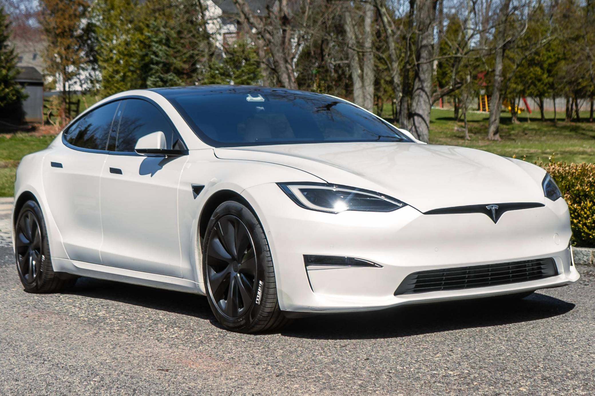

Închiriere Tesla în București
Descopera o flota premium construita pentru performanta, confort si eficienta in Bucuresti.
Tesla Model 3
Eficienta, rapida si ideala pentru oras, cu design premium si costuri reduse de utilizare.

Tesla Model Y
Spatiu mai mare, confort ridicat si autonomie excelenta pentru ture lungi.

Interior Model S
Design minimalist modern, tehnologie avansata si confort de top pentru orice zi de lucru.